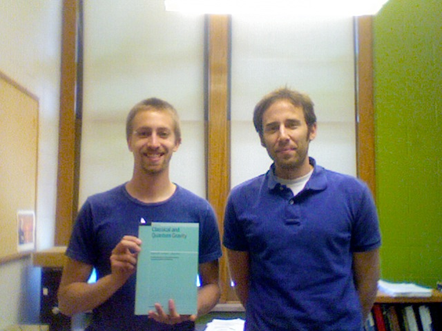
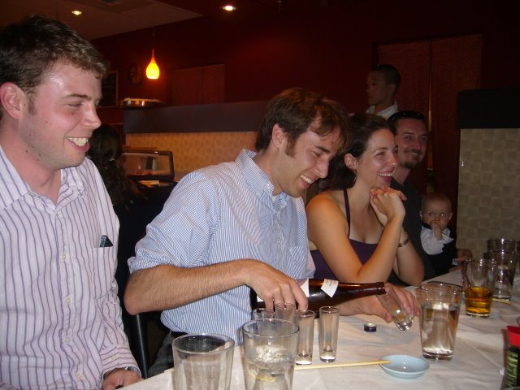

Old News
December, 2014: Improved Upper Limits on the Stochastic Gravitational-Wave Background from 2009-2010 LIGO and Virgo Data (LIGO & Virgo) published in Physical Review Letters.
December, 2014: Searching for stochastic gravitational waves using data from the two co-located LIGO Hanford detectors (LIGO & Virgo) published in Physical Review D.
November, 2014: Estimates of maximum energy density of cosmological gravitational-wave backgrounds (J. T. Giblin Jr. and E. Thrane) published in Physical Review D. This paper describes a rule of thumb governing the maximum energy density of stochastic backgrounds.
October, 2014: Detecting compact binary coalescences with seedless clustering (M. Coughlin, E. Thrane, and N. Christensen) published in Physical Review D.
August, 2014: Method for estimation of gravitational-wave transient model parameters in frequency-time maps (M. Coughlin, N. Christensen, J. Gair, S. Kandhasamy, and E. Thrane) published in Classical and Quantum Gravity.
July, 2014: Correlated noise in networks of gravitational-wave detectors: subtraction and mitigation (E. Thrane, N. Christensen, R. Schofield, and A. Effler) published in Physical Review D.
June, 2014: Measuring neutron-star ellipticity with measurements of the stochastic gravitational-wave background (D. Talukder, E. Thrane, S. Bose, and T. Regimbau) published in Physical Review D.
April, 2014: Statistical properties of astrophysical gravitational-wave backgrounds (D. Meacher, E. Thrane, and T. Regimbau) published in Physical Review D.
March, 2014: Seedless clustering in all-sky searches for gravitational-wave transients (E. Thrane & M. Coughlin) published in Physical Review D.
December, 2013: Search for long-lived gravitational-wave transients coincident with long gamma-ray bursts (LIGO & Virgo) published in Physical Review D.
The outreach abstract is here.
(Click on the link at the bottom to listen to different gravitational waveforms.)
November, 2013: Sensitivity curves for searches for gravitational-wave backgrounds (E Thrane & J D Romano) published in Physical Review D.
As part of this work, we have posted publicly available code to make "power-law integrated curves."
October, 2013: Searching for gravitational-wave transients with a qualitative signal model: seedless clustering strategies (E. Thrane & M. Coughlin) published in Physical Review D.
July, 2013: I delivered a 90-minute lecture "Persistent Sources of Gravitational Waves" at the 2013 Caltech Gravitational-Wave Astrophysics School (CGWAS). You can see the slides for my lecture here.
June, 2013: Correlated magnetic noise in global networks of gravitational-wave interferometers: observations and implications (E. Thrane, N. Christensen, and R. Schofield) published in Physical Review D.
January, 2013: Measuring the non-Gaussian stochastic gravitational-wave background: a method for realistic interferometer data (E. Thrane) published in Physical Review D.
November, 2012: Gravitational Waves from Fallback Accretion onto Neutron Stars (T. Piro & E. Thrane) published in The Astrophysical Journal.
September, 2012: Parameter Estimation in Searches for the Stochastic Gravitational-Wave Background (V. Mandic, E. Thrane, S. Giampanis, and T. Regimbau) published in Physical Review Letters.
Summer, 2012: I've started a new position at Caltech.
April, 2012: Upper limits on a stochastic gravitational-wave background using LIGO and Virgo interferometers at 600-1000 Hz published in Physical Review D.
The outreach abstract is here.
March, 2012: Identification of noise artifacts in searches for long-duration gravitational-wave transients (T. Prestegard, E. Thrane, et al.) published in Classical and Quantum Gravity.

With co-author, Tanner Prestegard, and a complementary issue of Classical and Quantum Gravity.
December, 2011: Directional limits on persistent gravitational waves using LIGO S5 science data published in Physical Review Letters.
The associated outreach abstract is here.
November, 2011: Jeff Mondloch and I appear in the Department of Physics and Astronomy's Research Spotlight.
August, 2011: Identification of long-duration noise transients in LIGO and Virgo published in Classical and Quantum Gravity.
May, 2011: I presented "Searches for a stochastic background of gravitational waves" at the April APS meeting in Anaheim, CA.
Feb, 2011: STAMP method/motivation paper, "Long gravitational-wave transients and associated detection strategies for a network of terrestrial interferometers," (E. Thrane, S. Kandhasamy, C. D. Ott, et al.) published in Physical Review D.
August, 2010:
The first STAMP-PEM data-quality flag (for the identification of airplane-induced corruption of interferometer data) is implemented.
July, 2010:
"Calibration of the LIGO Gravitational Wave Detectors in the Fifth Science Run" (J. Abadie et al.) published in NIMA.
December, 2009:
"Probing the anisotropies of a stochastic gravitational-wave background using a network of ground-based laser interferometers" (E. Thrane, S. Ballmer, J. D. Romano, S. Mitra, D. Talukder, S. Bose, & V. Mandic) has been published in Physical Review D.
September, 2009:
"Search for Astrophysical Neutrino Point Sources at Super-Kamiokande" (E. Thrane et al.) published in the Astrophysical Journal.
March, 2009:
"Search for Neutrinos from GRB 080319B at Super-Kamiokande" (E. Thrane et al.) published in the Astrophysical Journal.
October 2009: I've been affiliated with LIGO for over a year!
My first gravitational-wave publication has been accepted by PRD.
February 2009: Working at LHO.
December 21-23, 2008: My first LSC meeting in Maryland.
August 25, 2008: I have started a postdoc at the University of Minnesota working on searches for stochastic gravity waves with LIGO.
Grad school at the University of Washington...
July 11, 2008
I successfully defended my thesis.
Soon I start a postdoc at the University of Minnesota working on searches for stocastic gravitational waves with LIGO.

Terrence, Eric, Megan, Todd with Sebastian at Kisaku's
May 14, 2007
I passed my general exam.
Fall and Winter 2006
I have formed my advisory committee:
Chair: Jeff Wilkes* (Super-K, T2K, UNO)
Toby Burnett* (GLAST)
Leslie Rosenberg (ADMX, LSST)
Jens Gundlach* (Eöt-Wash, LISA)
Wick Haxton (INT) C433
Alec Habig* (UMinn-Duluth)
GSR: Scott Anderson (Astronomy)
* denotes reading committee member
Winter quarter 2007
I'm teaching Physics 110 and Physics 119.
In addition to my thesis work, I'm working on the Super-K upmu reduction and organizing the weekly Particle Astrophysics Seminar with Jeff Wilkes.
The seminar meets Fridays at 3:30PM in A114.
Fall quarter 2006
I will not be teaching.
I'll be on shift in Japan October 14-26.
November 10th
I'll be speaking at the particle astrophysics seminar...topic TBA.
I'm working on three projects this quarter: I'm helping with the upmu reduction, I'm working on my neutrino astronomy thesis and I'm continuing my search for dark matter "super events" at SK.
Yosh Shiraishi has successfully defended his thesis on a search for mass varying neutrinos (MaVaNs.)
(It is, to the best of my knowledge, the first evidence that neutrinos oscillate in low density media.)
His graduation will open space for 1-2 new graduate students to work on the upcoming T2K experiment, which will test for CP violation in the lepton sector among
other things.
Interested first and second year students should contact me or Jeff Wilkes to learn more about research opportunities.
2005-2006:
Neutrinos featured on TV!
The PBS show, NOVA, has produced an episode called "The Ghost Particle" about neutrinos.
The episode emphasizes the role of Ray Davis in detecting the solar neutrino problem.
John Bahcall is also prominently featured for his model of solar fusion.
SK collaborators Hank Sobel and Yoichiro Suzuki also make cameos.
Winter Quarter, 2006:
This quarter I'm teaching MSEP Phys 122, Phys 121 Tutorial, and Physics 110.
I'm taking Physics 507: Group Theory.
Spring Quarter, 2006:
This Quarter I'm teaching MSEP Phys 123 (assuming that the class is offered.)
Between March 31-April 24, I'll be taking part in the last stages of the SK rebuild.
(Once we're done, SK-III begins.)
I'll be auditing Phys 578: String Theory.
September 29, 2004:
Today I received notice that I passed my qualifying exams! A passage from "Charge of the Light Brigade" seems appropriate for the occasion.
Cannon to the right of them,
Cannon to the left of them,
Cannon behind them
Volley'd and thunder'd
Storm'd at wtih shot and shell,
While horse and hero fell,
They that had fought so well
Came thro' the jaws of Death
Back from the mouth of Hell,
All that was left of them...
June 10, 2004:
I just finished my last final of my first year of graduate school! I will be TA-ing Physics 116 this summer.
Home